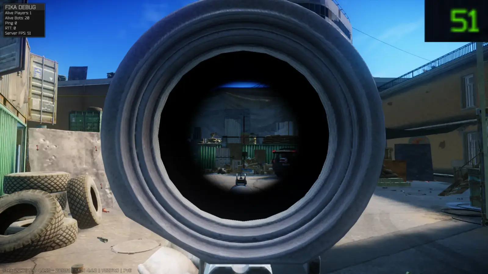
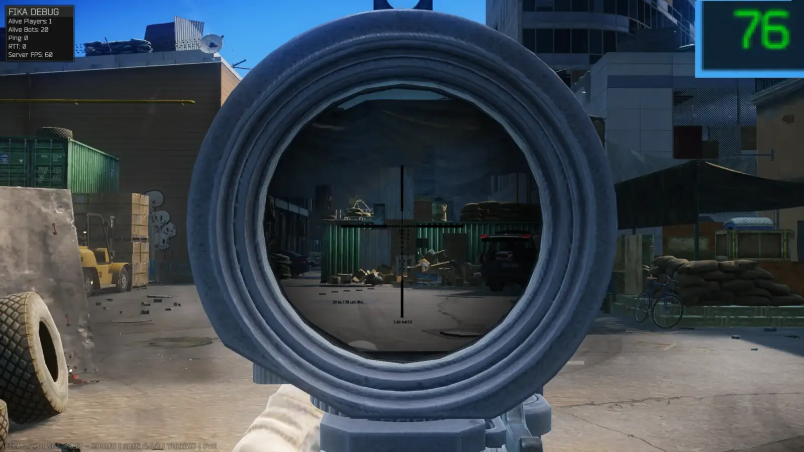
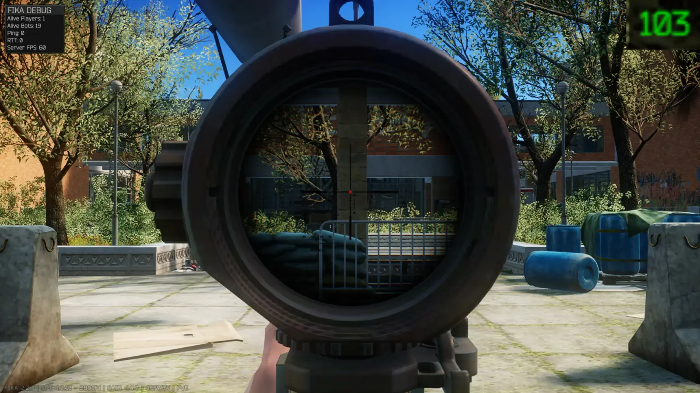
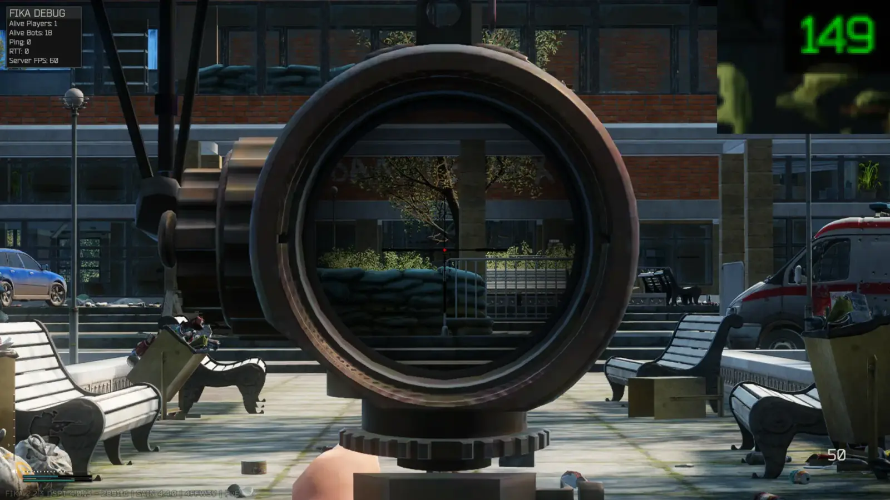
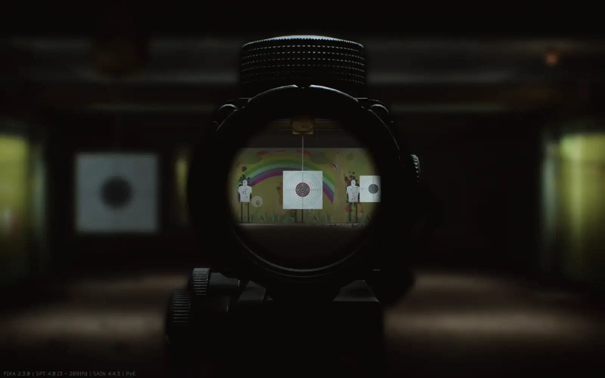

Picture in Picture Disabler
- Downloads
- 22,542
- Favourites
- 78
- Mod lists
- 90
Tired of losing 20 FPS when aiming with optic scopes ? Boy do I have some good news for you.
Be prepared for some jank, if the performance gain is worth it is up to you !
What does it do ?:
When aiming with an optic scope this mod disables the optic camera, zooms the whole screen, scales the models and cuts through the meshes.
Depending on the scenarios I gain between 15 to 50 FPS.
Works with mod scopes, reverts to vanilla PiP system with NVG and thermal scopes.
F12 menu:
General:
- Depth of Field
- Near blur when using NVGs aka real life fixed focal distance
- FOV fix like behaviour (1x is your base game settings FOV)
- Global scope and reticle scaling multiplier
- FOV transition duration
Whitelist and blacklist system:
Select a key for the system you want to use.
While ADS, press the key to add that scope to the corresponding list.
To remove a scope, press the key while ADS.
- Whitelist = Only use the scopes in the list.
- Blacklist = Let the scopes added to the list use the vanilla PiP system.
Jank:
- Multiple hacks to alleviate the jankiness.
Graphics:
- Auto Lodbias changes when aiming, multiplies the magnification level by a value you can choose.
- Manual LODbias, will override the auto if set to anything else than zero.
- There’s an option to keep the LODbias until you open your inventory/search a container. It helps alleviate the tree crossfade but has a performance cost.
Per scope settings:
- Vignette settings, those only work if vignette is enabled globally.
The following settings only take effect once you’ve saved them by pressing the dedicated key while ADS:
- Per scope reticle size.
- For variable reticles you can set the minimum and maximum size.
- Scaling multipliers if you think that a specific scope is too big or too small for you.
Illustrations:
Streets of Tarkov:


Shoreline:


My specs: 9800x3D, 7900XTX, 96 GB DDR5.
Installation:
-
Open the downloaded zip file.
-
Drag the BepInEx folder from the zip file into your SPT folder.

Support:
Discord thread in the SPT discord : https://discord.com/channels/875684761291599922/1482076311903146054
Epic’s All in One is supported up to 4.0.7, 4.0.8 breaks the modded scopes so be sure to blacklist them.
If something looks wrong and you have Fontaine’s FOVfix, make sure you’ve updated it to 4.0.1.
ScopeUpdateBackport is not supported, you’ll have to mess with the per-scope settings if you want to use it.
Thanks:
The whole SPT and Fika teams for making this awesome project.
Drakia for the original gif and his config order automatizer.
7bpencil for his initial attempt.
Fontaine for his work on the FOV and the ribcage scaling.
Disclaimer:
After having thought about it for a while I’m going to retire from modding for the time being.
I’m relying way too much on AI to do most of the heavy work. Whenever I see AI art I can’t stop myself from being disgusted by it and I’ve come to feel the same way about AI mods. Hence why I’ve decided to stop modding altogether and dedicate the free time I have to learn C# and Unity.
The only thing I’ll keep updated will be the per-scope config for PiP-Disabler.
If anyone wants to maintain my mods they’re free to do so ! Although PiP-Disabler is an absolute mess and would probably need to be rewritten from the ground up to be maintainable…
Version
1.5.0
Added
-
New toggle in config for FOV Fix Behaviour aka 1x FOV is Equal to player settings FOV.
2 global weapon/reticle multipliers so users can set the scaling they feel comfortable with.
Added at the behest of tooobles and ms. r3mains -
Added dual Kawase blur to mimic DOF and NVG focal distance
Thanks to Borkel for giving me the idea via his NVG mod (go download it it’s awesome).
-
Changing per scope vignette settings now applies them instantly.
Fixed
- Fixed reticle/scope effects display when using supersampling. Thanks to Piirakka and bruh1045(ADOOO) for reporting it
Version
1.4.1
Fixed:
Bypassed scopes triggered FOV restore to game settings FOV when switching magnification modes.
They don’t anymore :)
Thanks to Aerhyce for noticing and providing logs !
Version
1.4.0
Added:
- Firing with bolt rifles now bypasses the camera alignment while cycling the bolt aka no more camera skidaddling (once again).
Fixed:
- Fixed RAPTAR rangefinder, the display mesh was getting cut and the scaling caused the raycast to collide with the player’s body.
Version
1.3.1
Fixed the blurry grass that was caused by the recoil compensation patch.
Turns out moving the main camera can do some bad things to the way upscalers work…
Also fixed the TA01NSN scopes!
Done spamming the mod release channel, sorry for making you redownload.
Version
1.3.0
Additions:
- Per scope multipliers for scaling and reticle size for users to customize according to their liking.
- Implemented shader to allow for reticle tinting while rendering it after the upscaling.
- Added visual compensation for recoil (previously the scope disappeared below the screen), going full auto with a 20x scope still doesn’t produce nice effects but it’s easier to control your recoil with low magnification scopes.
Changes:
- Moved scope effects to afterForwardAlpha.
- Optimized mod by removing unnecessary scene scanning.
Fixes:
- Repaired the auto-bypass for mounted grenade launcher and rangefinder.
Version
1.2.1
Due to BSG jank, using a bipod bypassed the mod.
It doesn’t until the next regression anymore.
Happy Sunday gaming !
Version
1.2.0
New fix to the transition between sprinting and ADS:
Now compares alignment between scope and main camera axis.
Customizable alignment angle.
Should definitely fix the camera skiddadling
LOD bias adjustments:
LOD bias is now FOV driven and refreshed per frame.
Clamped between LOD set in game settings and 20 as a maximum.
If user chooses a manual value then it overrides everything.
Improved per scope settings.
Have a nice weekend !
Version
1.1.0
Added sprint into ADS and stance change bypassing.
No more camera skidaddling.
Version
1.0.0
-
Implemented variable scopes compatibility.
- Added optional weapon movement suppression while scoped:
- fire-mode switch animation suppression;
- magnification switch movement suppression;
- mod-toggle trigger movement suppression during scope mode changes.
- Added optional recoil return-to-zero behavior through the new
Force Recoil Return To Zerosetting. - Added a weapon-root Z offset correction that applies while aiming through supported optics at low FOV values.
- Added mesh-reticle controls:
- minimum and maximum mesh reticle scale;
- normalized mesh reticle scale;
- screen-space minimum stroke rendering for thin mesh reticles.
- Added optional weapon movement suppression while scoped:
-
Added new vanilla optic suppression patches so PiP render textures, optic camera enablement, and optic SSAA/lens paths are skipped while the mod is active, while bypassed optics can still fall back to vanilla behavior.
-
Added scope blacklist support, including a configurable blacklist string and hotkey for toggling entries.
-
Added per-scope override fields for mesh-reticle scale limits, vignette opacity/radius/softness, and weapon-root search expansion.
-
Added toggleable debug logging.
-
Custom meshcutting settings for everry fucking scope
-
Reworked reticle rendering around stencil-based lens masking so reticles render only inside visible lens areas when stencil support is available.
It’s been 3 long months…
Version
0.9.0
I lied.
Fixed per scope settings and added a permanent LODbias change option:
When exiting scope, the LODbias that was applied during ADS remains applied until you open your inventory.
On my setup it has a negligible performance impact and beats staring at the ugly tree billboards.
Version
0.8.1
Removed bypass of FOVfix’s sensitivity patch, fixing the sensitivity being all over the place for hybrid scopes and scopes with backup ironsights.
Sorry for chaining updates, was a lil bit too happy when I managed to make the compatibility fixes and was too eager to release them.
Version
0.8.0
Added Fontaine and DERP compatibility patches.
Fixed whitelist being broken if you pressed the key without being ADS.
Version
0.7.1
Scope effects now hide and restore correctly while reloading with the bypass enabled.
Changed the default reload bypass modifier.
Some settings renaming/removing.
Cleared up some more AI jank.
Next up will be Fontaine + DERP compatibility
Version
0.7.0
Initial public testing.
Report issues on github or discord or in comments.